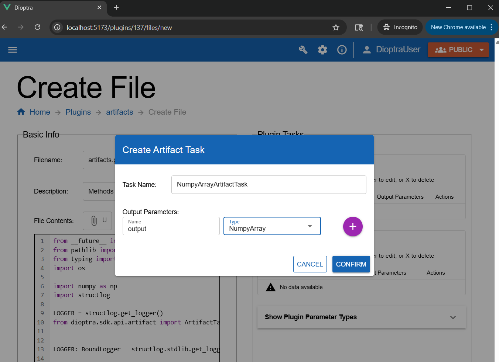
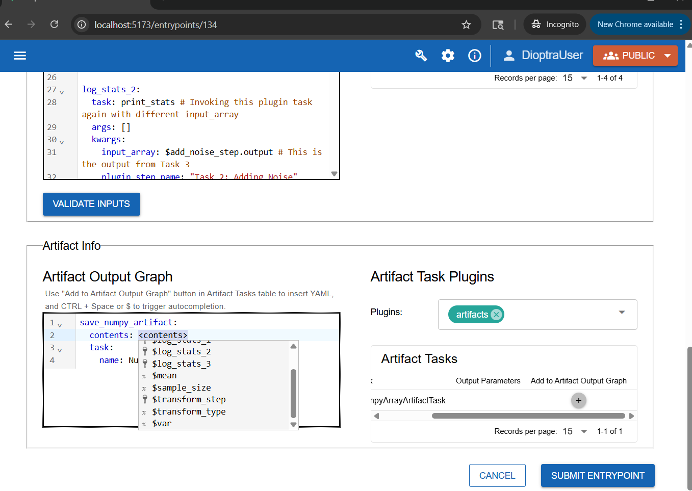
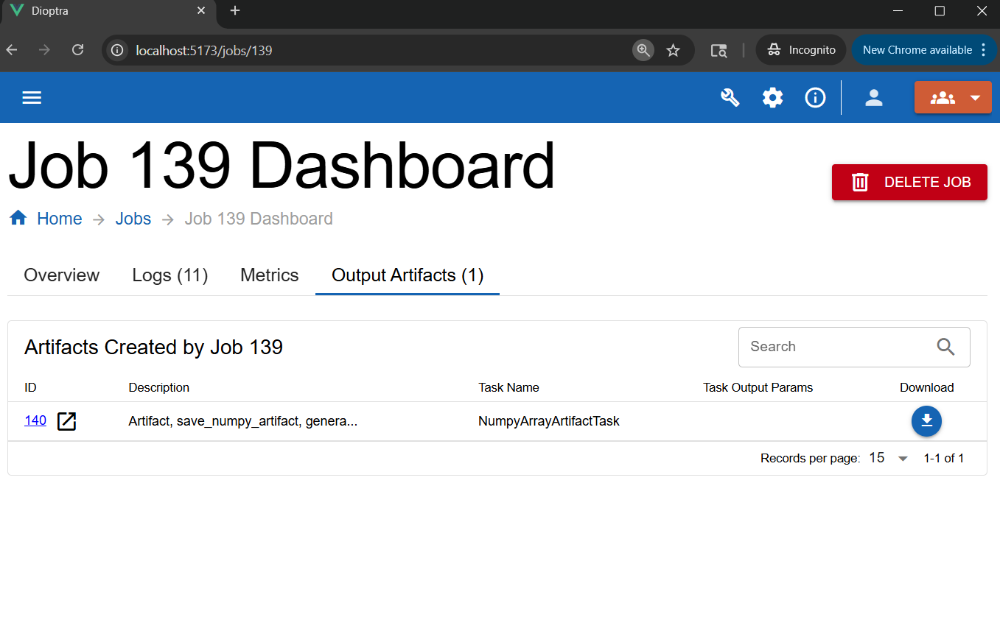

Saving Artifacts#
Overview#
In the last section, you created a multi-step workflow and watched how data evolved across chained tasks. Now, you will learn how to save task outputs as artifacts.
This tutorial build on the previous workflow by adding artifact-saving logic.
Learn More
See Artifacts Explanation to learn about the purpose of artifacts.
Workflow#
Step 1: Create an Artifact Plugin#
Before Dioptra can save objects to disk, it needs to know how to serialize and deserialize them. This is handled by an Artifact Task.
Just like before, you will create a new plugin, but this time you’ll define artifact tasks instead of function tasks..
Go to the Plugins tab and click Create Plugin.
Name it
artifactsand add a short description.Create a new Python file in the plugin called
artifacts.py.Copy and paste the code below.
artifacts.py
from __future__ import annotations
from pathlib import Path
from typing import Any
import os
import numpy as np
import structlog
LOGGER = structlog.get_logger()
from dioptra.sdk.api.artifact import ArtifactTaskInterface
LOGGER: BoundLogger = structlog.stdlib.get_logger()
# Defining serialize and deserialize methods for ArtifactTaskMethod is required
class NumpyArrayArtifactTask(ArtifactTaskInterface):
@staticmethod
def serialize(working_dir: Path, name: str, contents: np.ndarray, **kwargs) -> Path:
path = (working_dir / name).with_suffix(".npy")
np.save(path, contents, allow_pickle=False)
return path
@staticmethod
def deserialize(working_dir: Path, path: str, **kwargs) -> np.ndarray:
return np.load(working_dir / path)
@staticmethod
def validation() -> dict[str, Any] | None:
return None
Note
This plugin defines a single Artifact Task: NumpyArrayArtifactTask.
To define an Artifact Task, you must override two methods:
serialize: convert an in-memory object (e.g., NumPy array) into a file.
deserialize: read the file back into an object.
The serialize method should return the path to where the object is saved to disk.
Learn More
See Plugins Reference to learn more about the syntax of artifact handlers.
Step 2: Register Artifact Task#
Now you must register the class you just created.
In the Plugin Artifact Tasks window, click Create.
Enter the task name:
NumpyArrayArtifactTask.For the output parameter, add:
Name:
outputType:
NumpyArray

Defining an artifact task plugin requires creating a subclass of ArtifactTaskInterface.#
Note
Whereas a plugin task gets its name from the Python function name, an artifact plugin task gets its name from the subclass name (in this case, NumpyArrayArtifactTask).
The output parameter type tells Dioptra what kind of object to expect after the deserialize method is run.
Learn more in Plugins Explanation and Plugins Reference.
Click Submit File.
Step 3: Modify Entrypoint to Save Artifacts#
Next, you will modify sample_and_transform_ep to include an artifact-saving task. Nothing about the sample_and_transform Plugin itself needs to change.
Open
sample_and_transform_ep.In the Artifact Info window (toward the bottom), select your new
artifactsPlugin.Click Add to Output Graph.
Rename the step to
save_numpy_artifact.Set the contents equal to the output from the final step of your task graph (e.g.,
$transform_stepor whatever the last step was named).

The Artifact Output Graph defines the logic for which plugin tasks should be saved and how. contents should be a reference to a step name from the task graph.#
Click Submit Entrypoint to save your changes.
Note
When the artifact task runs, it automatically calls the serialize method and writes a file to the artifact store.
Step 4: Run Job with Artifact Saving#
Now you can try out the Artifact saving logic.
Navigate back to your Experiments and select the
Sample and Transform Expfrom the previous step.Create a new job using the entrypoint you just edited (
sample_and_transform_ep).Select your desired parameters and add a description to the Job.
Click Submit Job.
Note: Ignore the Artifact Parameters editor - this is for loading past Artifacts as inputs, something that will be explained in the next step
Note
When an artifact task graph is defined, the logic will execute once all the plugin tasks have completed.
Step 5: Inspect the Artifact#
After the job finishes, click on the job to see the results.
Go to the Artifacts tab within the job details.
You should see a new artifact file created by the workflow.
Download it to confirm it was saved successfully.

Download the artifact from the Job Dashboard.#
A .npy file should have been downloaded. This is the numpy array after the random noise was added and the transform was applied.
Congratulations — you’ve just saved your first artifact!
Conclusion#
You now know how to:
Create an artifact plugin with serialize and deserialize methods
Add artifact tasks into an Entrypoint
Save task outputs as reusable files
Verify artifact creation through the Dioptra UI
In the next part, you will load artifacts into new entrypoints, so results from one workflow can feed directly into another.